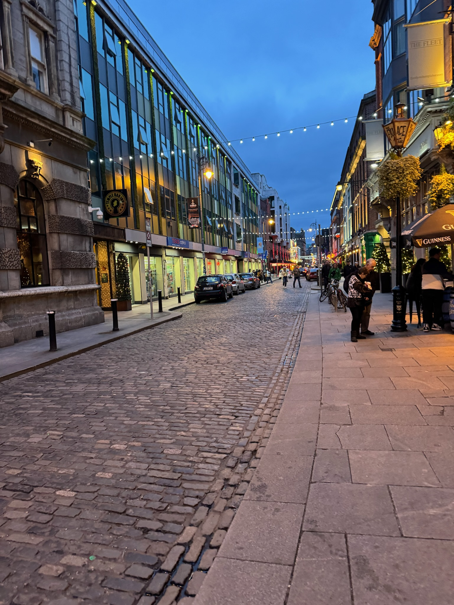
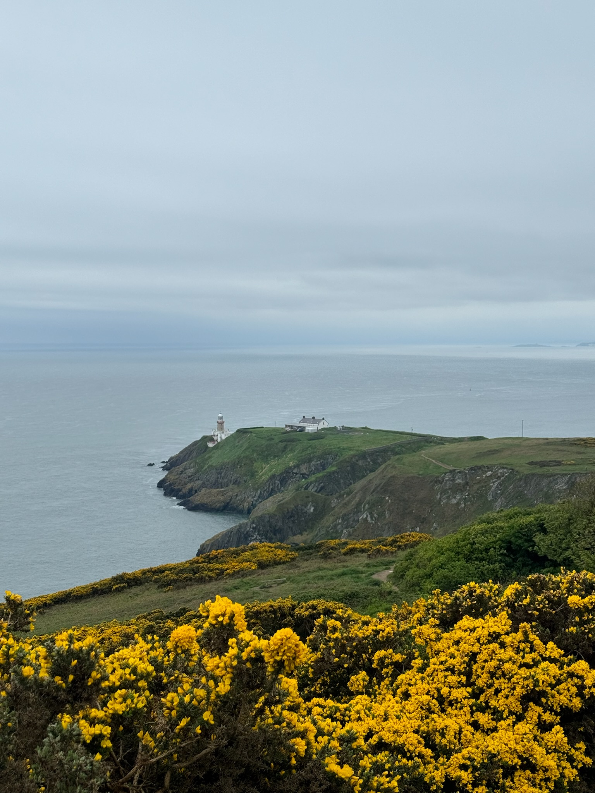
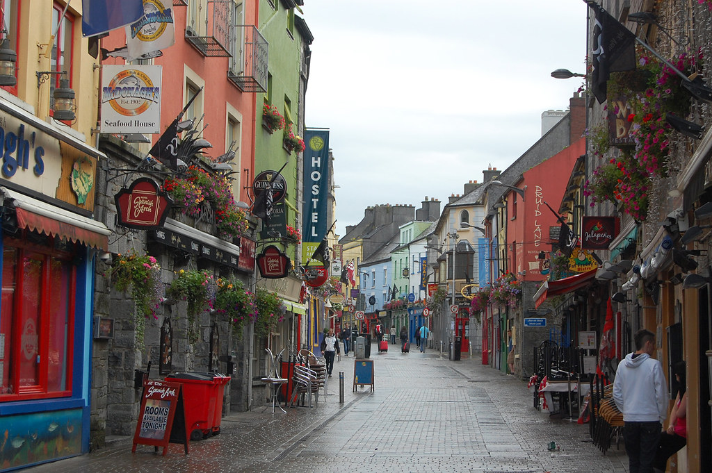

About Me

Welcome to our digital travel log documenting our study abroad adventure in Ireland! Our journey takes us through the bustling streets of Dublin, the historic town of Kilkenny, the vibrant city of Galway, and the breathtaking Cliffs of Moher. Join us as we explore the rich culture, stunning landscapes, and warm hospitality of the Emerald Isle.
Gallery


